This section covers some advanced options available for the Bar items.
On right clicking any of the bar items at design time or at run time, displays a context menu. The below image illustrates the various options in the context menu.
 Note: At runtime, the context menu will be
invoked, only with the customize dialog open.
Note: At runtime, the context menu will be
invoked, only with the customize dialog open.
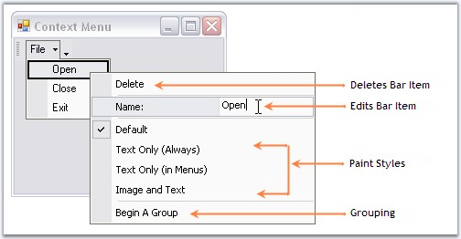
Figure 775: Context Menu for the Bar Item "Open" at DesignTime
· It lets you edit the text of a bar item using the text area against Name option.
· Select Paint Styles.
Note: The editing option for the bar item
text at run time can be disabled by setting BarManager.AllowUserRenaming
property to false.
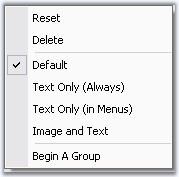
Figure 776: Context Menu at run time without Text Editing Option
Image Icon Option of a Baritem for CustomizingPopupMenu
ChangeImage option is added in CustomizingPopupMenu. Baritem’s image can be changed using ChangeImage option.
1. Right click at the baritem during runtime customization.
Note: CustomizingPopupMenu appears.
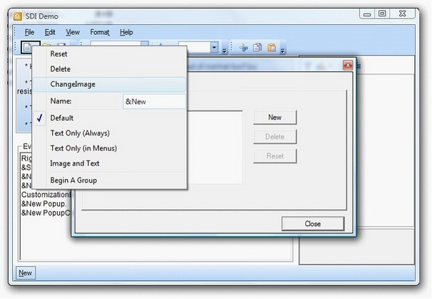
Figure 777: CustomizationPopupMenu
2. Click ChangeImage
Note: File Dialog Opens.
3. You can select any image for the baritem using this dialog.
Design Time
In the designer, right click on the bar item which you want to delete and select "Delete" option from the Context Menu.
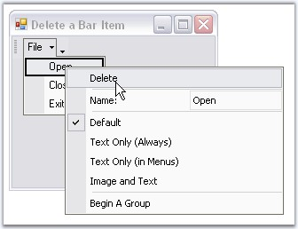
Figure 778: Delete option in the Context Menu
You can remove the BarItem from a submenu using any of the below two methods also.
|
BarItem Methods |
Description |
|
Remove |
Removes the first occurrence of the specific object.
obj - System.object to remove from System.Collections.Arraylist. |
|
RemoveAt |
Removes the bar item from the ParentBarItems Collection based on the Bar item index(index). The parameter is,
index - Index of the bar item. |
|
[C#]
this.parentBarItem1.Items.Remove(this.barItem1); or this.parentBarItem1.Items.RemoveAt(1); //where '1' refers to the index of the BarItem in its parentBarItems collection. |
|
[VB.NET]
Me.parentBarItem1.Items.Remove(Me.barItem1) or Me.parentBarItem1.Items.RemoveAt(1) 'where '1' refers to the index of the BarItem in its parentBarItems collection. |
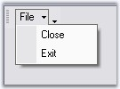
Figure 779: "Open" Bar Item deleted from the Menu
RunTime
This option is available for the end users at run time also. Right-clicking on a bar item at run time invokes the context menu similar to that in the Designer.
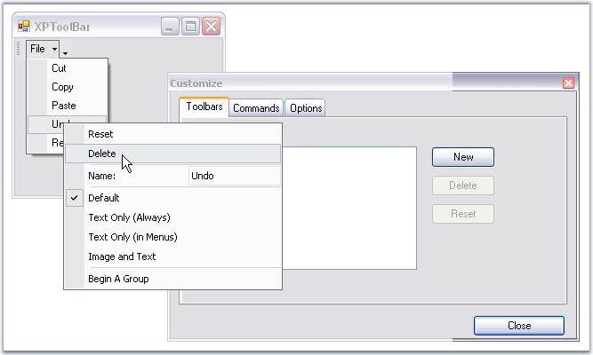
Figure 780: BarItem Context menu at RunTime with Customize Dialog Box Open
Design Time
XPMenus lets you group certain bar items using Begin a Group option in the designer, code and programmatically also.
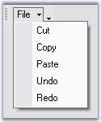
Figure 781: Bar Item without Grouping
Select a bar item in the dropdown from which you want to start a group, right click on it and select "Begin A Group" option from the Context Menu. This inserts a separator from the bar item selected and starts a group.
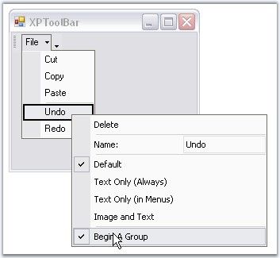
Figure 782: Enabling Begin a Group Option in the Designer
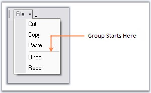
Figure 783: Grouped Bar Items
Programmatically
If you want to draw a separator between the BarItems in a bar, you have to use BeginGroupAt (BarItem) as shown below:
|
[C#]
//This will draw a separator before barItem1 this.bar1.BeginGroupAt(this.BarItem1);
//to draw a separator between BarItems in a submenu, use the following code //This will draw a separator above barItem3 this.parentBarItem1.BeginGroupAt(this.BarItem3); |
|
[VB.NET]
'This will draw a separator before barItem1 Me.bar1.BeginGroupAt(Me.BarItem1)
'to draw a separator between barItems in a submenu, use the following code 'This will draw a separator above barItem3 Me.parentBarItem1.BeginGroupAt(Me.BarItem3) |
RunTime
This option is available for the end users at run time also. Right clicking on a bar item at run time, invokes the context menu similar to that in the designer.
Note: Context menu will be invoked at run
time, only with the customize dialog open.
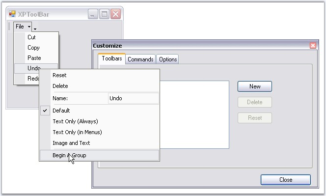
Figure 784: BarItem Context Menu Highlighting Begin a Group option
XPMenus lets you add separators in between the bar items in a Toolbar, and also in between menu items under a ParentBarItem.
Separators for menu items in ParentBarItem Through Designer
To add separators between the menu items under a ParentBarItem, invoke Int32 Collection Editor using ParentBarItem.SeparatorIndices property.
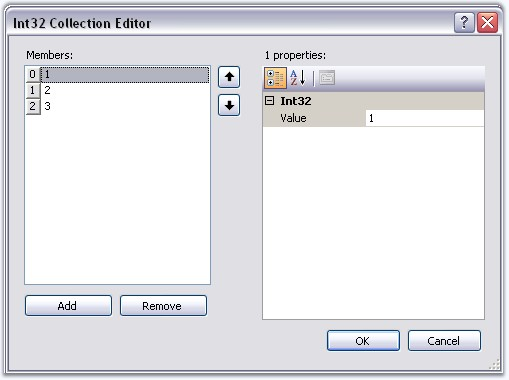
Figure 785: Adding Separator Indices for Menu items of ParentBarItem
|
[C#]
//Add Separators between bar items in a toolbar this.bar1.SeparatorIndices.AddRange(new int[] { 1, 2 });
//Add Separators between menu items of a ParentBarItem this.parentBarItem1.SeparatorIndices.AddRange(new int[] { 1, 2, 3 });
//Clear Separators bar1.SeparatorIndices.Clear(); parentBarItem1.SeparatorIndices.Clear(); |
|
[VB.NET]
'Add Separators between bar items in a toolbar Me.bar1.SeparatorIndices.AddRange(New Integer() {1, 2})
'Add Separators between menu items of a ParentBarItem Me.parentBarItem1.SeparatorIndices.AddRange(New Integer() {1, 2, 3})
'Clear Separators bar1.SeparatorIndices.Clear() parentBarItem1.SeparatorIndices.Clear() |
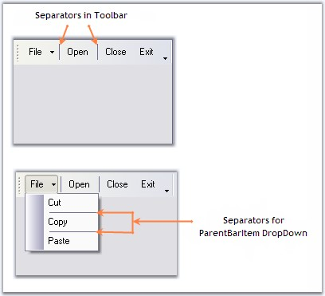
Figure 786: Separators for Bar and ParentBarItem DropDown